📦 Changelog
All notable changes to this project will be documented in this file. This project adheres to Keep a Changelog and Semantic Versioning.
Downloads for every version are on the release page.
Legend — 🧪 an experiment: off by default, turn it on per device in Settings ▸ Experimental · 🧩 a built-in plugin: off by default, turn it on in Settings ▸ Plugins · 🖥️ desktop app only · 📱 phone and tablet
[0.5.3] - 2026-11-26
Notes get comments: on a selection, a section, a whole note, a whiteboard element or a media file, with replies, resolving and search, synced with the vault and shared with the people you choose. Editor themes and Markdown maps leave Experimental: 33 editor themes in a searchable gallery, and maps with several places, routes and areas, a place picker, and nothing sent to OpenStreetMap until you load a map. Settings opens as a popup over your notes and no longer jumps as you change it.
✨ New
- Comments — comment on selected text (the Comment button of the selection toolbar, in the editor and the
preview, or
Ctrl+Shift+M), on a section (the + beside a heading), on the whole note, on a whiteboard element or on an image, recording or file. Threads live in the note's Comments panel (Open, Resolved, Orphaned) with replies, edits, resolving and reopening; they sit beside the note, never inside its Markdown, and sync with the vault. Search finds comments and opens the note at the thread, replies to your comments show in the activity island, a share can give the Commenter role (read and comment, no edits), and a web export can add a Comments section. See the Comments guide. - Editor themes are a feature — 33 themes for the Markdown editor (18 new: Catppuccin, Dracula, Nord, One Dark, Rosé Pine Dawn, Solarized, Tokyo Night and more), each passing Arkenda's contrast rules as its maker defines it, in a gallery in Settings ▸ Appearance ▸ Editor theme: search, High contrast, Warm and Cool filters, favourites, recently used, a large live preview and keyboard navigation; on a phone, a list with a preview sheet. GitHub stays the default pair, and the switch at the top turns the themes off.
- Maps are a feature — a
mapblock holds several places (lat, lon, labellines, each label its marker's popup) with the view fitted to them,route: truefor a line through them,circle:andpolygon:areas and aheight:. A map can be expanded over the window, opened in OpenStreetMap, read by a screen reader, and dims in dark mode. Insert ▸ Map opens a place picker: click or tap to drop places, label or remove them, type coordinates, then insert the block. Each map waits for a click (Load map) before contacting OpenStreetMap, unless Load maps automatically is on in Settings ▸ Editor ▸ Markdown extensions ▸ Maps; exports write a map's places as text. See the Maps guide. - Settings as a popup — Settings opens over the note you were on (a full-screen sheet on a phone), and closing
it brings you back where you were;
/settings/<section>links still open the right page. - 🖥️ Share on Windows — a note's Share as file… and a card's Share open Windows' own share window.
- 🖥️ Windows Firewall — on Windows, Settings tells when the firewall blocks device sync and offers Allow in firewall (with the system's permission prompt) or the firewall's own page.
🔧 Changes
- Settings without jumps — changing an option no longer makes the page flicker or jump: section moves skip the transition, the page fades in alone, and every surface keeps its place (checked by a new layout test).
- Long notes with lists, timelines and maps render off the main thread — numbered lists, timelines and maps now render in the background worker like the other Markdown extensions.
🗑️ Removed
- Markdown comments extension — the experimental
<aside>comments extension is retired in favour of the new comments; a device that had it on is told once. Raw<aside>HTML still shows as before.
🐛 Fixed
- Table handles on short tables — in the preview, a table's column and row handles follow the table's own height instead of the whole view, and long handle menus stay inside the window.
- 🖥️ Device pairing from the Microsoft Store — the Store build of Arkenda now has the firewall rules device sync needs, so pairing and sync reach other devices.
[0.5.2] - 2026-11-21
Arkenda reaches beyond its window: reminders on notes and tasks with Snooze and Done, a system tray and start with the system, read aloud, share notes and files out and receive them in, LocalSend to and from any device on your network, and pictures through the clipboard on Android. Experiments you used every day became features, and every Markdown extension now lives in one place, synced with your vault.
✨ New
Reminders — a task reminds you at its due time: write the time after its due date (
📅 2026-11-20 ⏰ 09:30), or pick it with the new ⏰ button in Todos. Any note can remind you too: Remind me… in its … menu saves a day and a time in itsremindproperty. The notification and a card in the app offer Open, Snooze 10 min and Done (ticks the task, or removes the note's reminder). Each device fires a reminder once, and one missed while the app was closed fires at start when it is less than a day old. 🖥️ On Linux and Windows the notification itself has Snooze and Done buttons (a click on it opens the note). 📱 On Android the reminders fire with Arkenda closed and after a restart, Snooze works from the notification, and on Android 14 and later setting a reminder offers to open Alarms & reminders so they ring on the minute. 🌐 On the web, setting the first reminder asks for the browser's notification permission, once.Experiments that became features — Todos, Calendar, the app context menu, Merged table cells, Smart typography, Spoilers and Save diagrams are now part of Arkenda and on by default; 🖥️ Window blur too, off until you turn it on. Their switches left Settings ▸ Experimental for their own sections: Todos and Calendar in Layout, the context menu in General, Window blur in Appearance ▸ Transparency, the Markdown extensions in Editor. A device that turned one of them on keeps it on.
Markdown extensions in one place — Settings ▸ Editor ▸ Markdown extensions lists every Markdown extension, graduated or experimental, by group, each with its switch, a sample of its syntax and its insert-menu entry, plus a search, Turn all on and Back to defaults. Your choices now follow the vault, so your other devices get them; check Only on this device to keep this device's own choice. Settings ▸ Experimental no longer lists them.
📱 Pictures through the clipboard on Android — paste a picture copied in another app (a screenshot, a photo) into a note, and copy a picture out of Arkenda to paste it elsewhere.
Copy image in the viewer — the picture viewer has a Copy image button, so a picture can be copied on a phone or tablet too.
Read aloud — the palette and a note's menu read the selection, or the whole note, with your system's own voice, in a small player bar with Pause, Play and Stop. Only voices on your device are used: Android's installed text-to-speech voices, speech-dispatcher on Linux where it is installed, Windows' voices, and the browser's on-device voices on the web.
Share as file — a note's menu and the palette hand the note, as
<title>.md, to another app through the system's share sheet, and a file attached to a note has a Share button on its card. On Android, on Windows, and in browsers that can share files; Linux has no share sheet.📱 Share into Arkenda — share text, a link or pictures from another app to Arkenda on Android, and choose where they go: your Inbox, a new note, or the end of a note you pick. A link becomes a link named after the page (it is never opened); pictures are checked and stored like any attachment, up to 10 at a time.
🖥️ Arkenda in the system tray — on Linux and Windows, a tray icon with New note, Quick capture, Show Arkenda and Quit. It is on by default; Settings ▸ General turns it off, and Close to the tray (off by default) makes closing the main window save and hide it in the tray instead of quitting.
🖥️ Start with the system — Settings ▸ General ▸ Start Arkenda with the system opens Arkenda when you sign in, on Linux and Windows. Off until you turn it on.
📱 Launcher shortcuts on Android — touch and hold Arkenda's icon for New note and Quick capture.
🧪 🖥️ 📱 LocalSend — send notes and attached files to the LocalSend apps on the same network, and receive texts, pictures and files from them where you choose (as a share does), on the desktop and Android. Every transfer asks first, a PIN is optional (on its card in Settings ▸ Experimental), and a port is open on your local network only while the experiment is on. Implemented from the protocol's public description (it publishes no license).
Long notes render off the main thread again — with the default Markdown extensions on, the preview's render worker now parses merged table cells, spoilers, tabs, kanban boards, accordions, extended code blocks, inline marks and slides itself; lists, timelines, comments, maps and embeds still render in the page while on.
🔧 Changes
- Clearer editor themes — the 15 editor themes take their makers' new colours, tuned for contrast: comments, keywords and links read better on every theme, and Basic Dark's links now use its own colour.
- Markdown on the released libraries — the Markdown extensions run on their released versions; notes render as before.
🐛 Fixed
- 🖥️ Window blur no longer blinks on Linux — the blur is set once and kept, instead of being removed and added again on every theme or opacity change.
- 🖥️ A start that freezes is undone — on Linux, a start that never stays responsive goes back to Auto rendering
and turns the window effect off at the next start; the window opens opaque while compositing is off; and
ARKENDA_SAFE_MODE=1starts once with Auto rendering, an opaque window and the system title bar. - Front matter stays out of the preview — a note's front matter is no longer shown as a line and a heading in the preview or in an exported web page; task checkboxes still toggle their own line.
- 🖥️ Staying awake for work already running — on Linux, a sync or an export already under way when Arkenda finished starting now keeps the machine awake too, not only work started afterwards.
[0.5.1] - 2026-11-18
Arkenda now works with the rest of your desktop: links and Markdown files open in it, notes are a search away in KRunner, the taskbar and sleep follow what the app is doing, deleted notes go to the system's trash, and video posters come from the system first. Plus one Attach entry for any file, versioned documentation, and tools for plugin authors.
✨ New
- 🖥️ One Arkenda at a time — starting Arkenda again brings the open window forward instead of opening a second copy.
- Note links — an
arkenda://note/<id>link (the address MCP clients get for a note) opens that note from another app or the browser. The.deb,.rpm, Windows installers and Microsoft Store package register the link; the.AppImageregisters it the first time it starts; 📱 on Android the link opens the note too. - 🖥️ Open Markdown files with Arkenda — double-click a
.mdfile or use Open with: a file inside the open folder vault opens as its note, any other is edited in place (it stays where it is, outside the vault; edits save after a short pause, and if another app changed it meanwhile, Arkenda asks whether to reload theirs or keep yours). - 🖥️ New note and Quick capture from the launcher — right-click Arkenda in the Linux launcher or taskbar, or run
arkenda --new-note/arkenda --quick-capture. - 🖥️ Show in folder — a note's menu opens your file manager at the note's file (folder vaults).
- 🖥️ Deleted notes go to the system's trash — a note deleted forever from a folder vault moves its file to the trash of Linux or Windows, so it can still be restored there.
- 🖥️ System notifications on Linux — the 🧩 Pomodoro timer's notifications show as your desktop's own, with an Open action that brings Arkenda forward.
- 🖥️ Taskbar progress and due count — an import, export or sync shows its progress on Arkenda's taskbar icon (KDE Plasma and other launchers that read it, and Windows), and the icon shows how many tasks are due.
- 🖥️ The computer stays awake for long work — while Arkenda records, imports, exports or syncs a lot, Linux does not suspend; it may sleep again as soon as the work ends.
- 🖥️ Sync knows your network and battery on Linux — a metered connection, a low battery or power saver lets the media policy wait for a better moment, as on Android.
- 🖥️🧪 Notes in KRunner — on KDE Plasma, find your notes by title from the search (Alt+Space) and open them, or start a new note there (Settings ▸ Experimental ▸ Notes in KRunner).
- Video posters and lengths from the system — a video's poster, duration and size come from what Linux, Windows and 📱 Android already know (the thumbnail cache, the shell, the media retriever) before Arkenda decodes the file itself, so long videos show their poster sooner.
- Attach a file… — one entry in the editor and on the whiteboard takes any file: a picture, audio, video or any other file, recognised from its contents.
- Versioned documentation — the user guides and the plugin guide now have one folder per version in the public
repo (
wiki/), readable in Arkodex; the guides of this version. - Plugin author tools — every release now carries
arkenda-plugin-check.mjs(checks a plugin package with Node.js 22) andarkenda-plugin-starter.zip(a template to start from).
🐛 Fixed
- 🖥️ On Linux, sync frames and plugin signatures of 65,473 to 65,535 bytes could fail to verify or close the window (a WebKitGTK limit); they are now checked another way.
[0.5.0] - 2026-11-17
Dictation that stays on your device, a website with a playground to try Arkenda in the browser, motion you can tune or turn off, a sharper Linux app (Wayland quick capture, an AUR package, native contrast and motion), logs you can share, a fuller whiteboard, and a public guide for plugin authors.
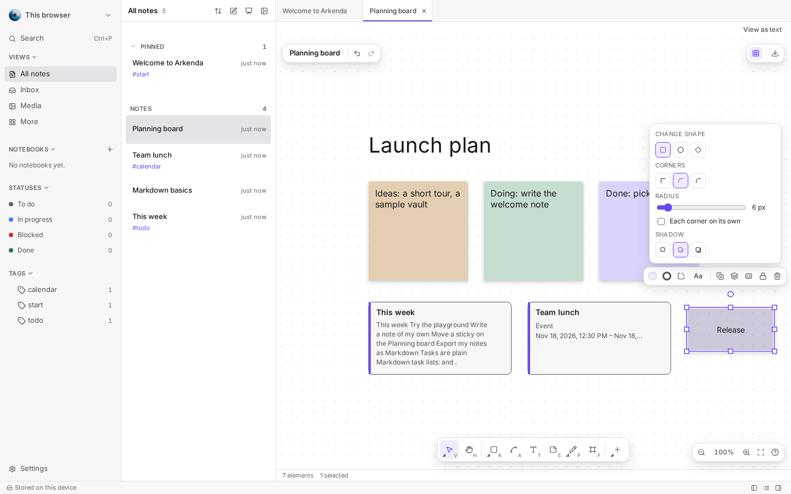
✨ New
🖥️🧪 Quick capture from any app on Wayland — on KDE Plasma, GNOME and other Wayland desktops whose portal offers global shortcuts, quick capture's key now works whatever app has the focus: the desktop asks you to confirm the key in its own dialog the first time, and Settings ▸ Keyboard shows the key it bound (it may differ from yours). Desktops without that portal keep the X11 key, which works only while an X11 app has the focus, and Settings says so.
🖥️ Arch Linux package — install Arkenda on Arch and its derivatives from the AUR (
yay -S arkenda-bin). It uses your system's WebKitGTK, video codecs and GTK theme instead of the AppImage's own copies, and pacman keeps it up to date (Settings ▸ About says so instead of offering an in-app update).🖥️ Linux rendering fallback — for blank or flickering windows on some GPUs: Settings ▸ Experimental ▸ Linux rendering fallback starts Arkenda without DMA-BUF or without compositing, after a restart. On NVIDIA systems Arkenda now adds
__NV_DISABLE_EXPLICIT_SYNC=1at start; a variable you set yourself always wins. Programs Arkenda starts (the terminal, git, your browser and players) keep your own environment. If a start never reaches the window, the next one goes back to Auto and says so;ARKENDA_RENDERING=autoforces Auto for one launch.License — Arkenda's terms are now written down in LICENSE: free to use on any number of devices, personal or commercial; share the official, unmodified release files; no selling or modified copies. The Linux packages carry it too.
Motion setting — Settings ▸ Appearance ▸ Motion: System (full motion, or none when your system asks to reduce motion; it follows a change at once), Full, Subtle or Off, on this device only. The app's animations follow it.
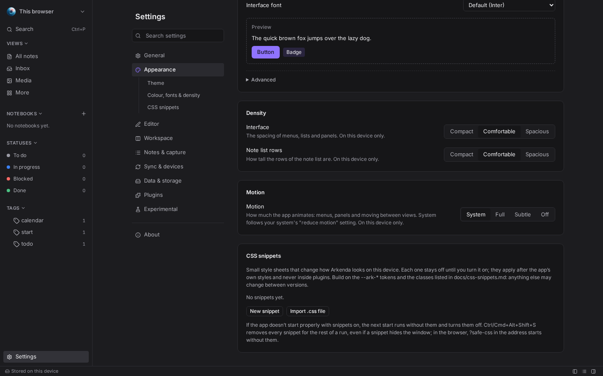
Small feedback — buttons give a little when pressed, switches slide, checkboxes and radios dip while pressed, and button and menu highlights fade in; all of it follows the Motion setting (none at Off), and keyboard focus still shows at once. Checkboxes, sliders and progress bars use the accent colour everywhere, and the settings pages use the app's standard buttons.
🖥️ System contrast and reduced motion on Linux — the desktop app now reads high contrast and reduce motion from your desktop's settings (GNOME, KDE and others through the settings portal), even where the webview misses them, and follows a change at once: high contrast strengthens borders and muted text, and the System motion level turns animations off. In every app, high contrast now also applies in the dark theme.
Logs you can share — Settings ▸ About ▸ Logs keeps the warnings and errors of this device (the app, its workers and the desktop and Android shells), at most about 1 MB, redacted when written: no note text, titles, file paths or keys, and nothing is ever sent. Filter by level and area, search, Copy, Save as file (a
.txtwith the system information on top) or Clear. Detailed logging adds info-level events until Arkenda restarts. Report a problem says how to attach the saved file. On Android, Share hands the same file to an app you pick (mail, chat, a drive) through the system's share sheet.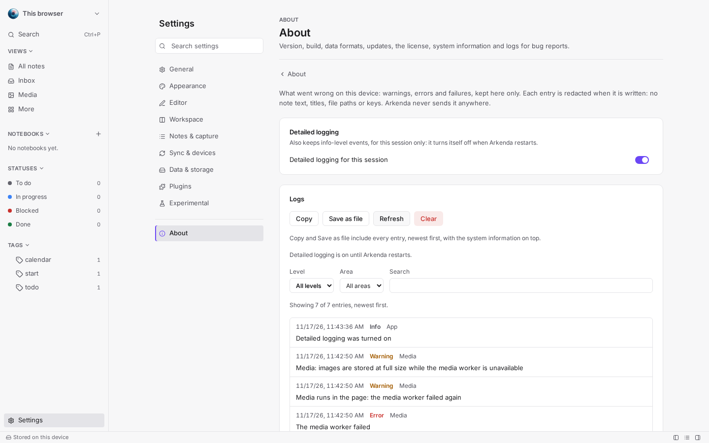
📱 Dictation — the microphone button in the editor's toolbar (or Dictate in the command palette) types what you say at the cursor: the words heard so far show as you speak, and each finished phrase is one undo step. Press it again or Escape to stop. It uses only a recognizer that runs on your device, so no audio ever leaves it: on Android 12 and later (the system's on-device recognizer; a missing language model can be downloaded first), and in Chrome on a computer that has one. Where there is none (Linux, Firefox, Windows for now) the button does not show; on Windows, Win+H still types into the editor.
Website and playground — Arkenda has a website at https://fsegurai.github.io/arkenda-release/ (English and Spanish): what it does, downloads for your system from the latest release, the user guides, the plugin guide, the changelog and the privacy policy. Its playground runs the web app with a sample vault in your browser, kept apart from any vault of yours, with nothing sent anywhere (sync, the marketplace, link previews and weather say "App only"); Reset sample and Export as Markdown are in its banner.
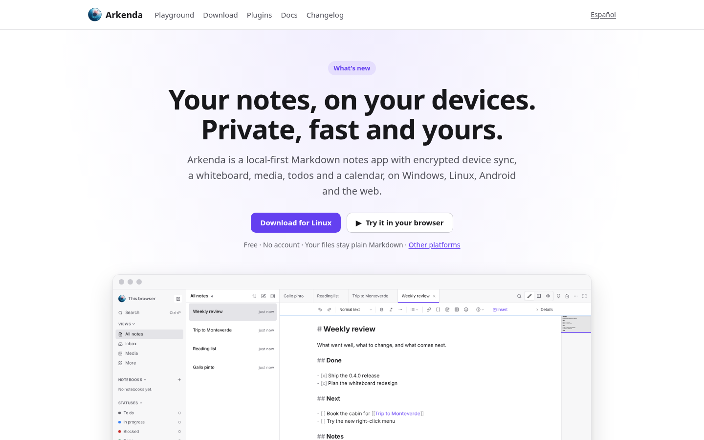
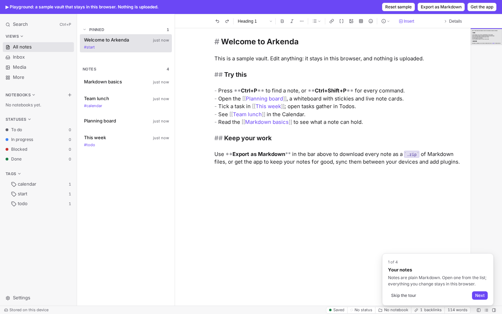
The website, in English and Spanish The playground, with a sample vault and a short tour Plugin guide for authors — the guide for writing plugins is public, with new pages on what a plugin must have, its limits, what to consider (privacy, performance, accessibility, phones, sync) and how submitting works. Publishing plugins to other users is not open yet; the new "Plugin submission" form registers a plugin and asks for an early look.
🧪 More Markdown blocks — new experiments in Settings ▸ Experimental, off until you turn them on: accordions, kanban blocks (shown as a board, read only), slides (a presentation block with an overview and full screen), comments (review comments with replies, as a block or inline), lettered and Roman lists, and inserted, superscript and subscript text (++ins++, x^2^, H
2O).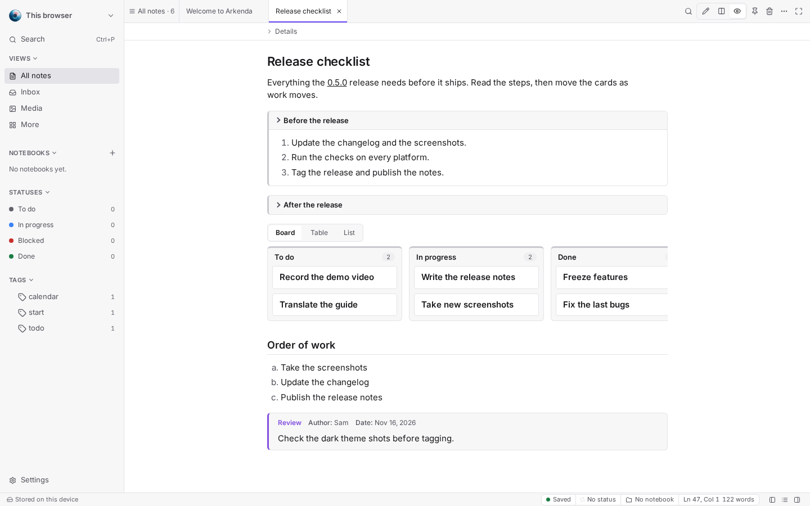
🔧 Changes
🧪 Whiteboard: floating tools — the bar above the board gives way to chrome that floats over it: a tool dock at the bottom (shapes and insert in flyouts; the dock shows the last shape you picked, on this device), the board's title with undo and redo at the top left, export at the top right, and zoom at the bottom right. Every tool keeps its key, shown in its button's corner, and ? lists every key of the board. 📱 On a phone the dock scrolls sideways, the selection's style opens as a sheet from the bottom, the ? button sits at the top right, and you zoom by pinching.
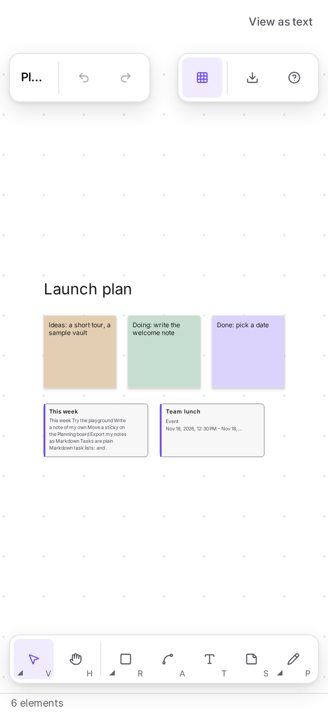
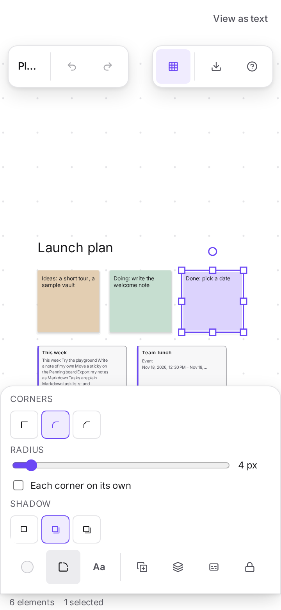
The tool dock on a phone The selection's style as a sheet 🧪 Whiteboard: property bar — the selection's style opens in a bar above it (a sheet from the bottom on a 📱 phone) instead of the side panel: fill and stroke from the palette or any custom colour, stroke width and dash style (solid, dashed, dotted), opacity, and for text the font (app font, serif, monospace, handwritten, or a font installed on the device), size (S, M, L, XL or any size in px), bold, italic, underline, strikethrough, colour, outline (colour and width), alignment (left, centre, right, justify; top, middle, bottom) and text opacity. Lock (Ctrl+Shift+L) keeps elements from being moved, resized, restyled or deleted until unlocked. Boards stay readable by 0.3.0 and 0.4.0, which keep the new styles as they are.
🧪 Whiteboard: shape options — the property bar's shape section changes a shape into another (rectangle, ellipse, diamond) keeping its text, style and place; sets the corners of a rectangle, diamond, sticky note or frame: sharp, round with a radius, cut, or each corner on its own; and adds a shadow (soft or hard) to a shape, sticky note or frame. The SVG and PNG exports draw them. 0.3.0 and 0.4.0 keep these styles as they are and draw a rectangle's radius (cut corners show round there). A changed shape keeps its corners as they looked, its connectors, its frame and its group.
🧪 Whiteboard: editing — duplicate (Ctrl+D, or Alt-drag; connectors between the copies stay connected), align and distribute in the property bar once two or more are selected (a group moves as one), arrange (bring to front, bring forward, send backward, send to back) in the property bar and the right-click menu, copy and paste style (Ctrl+Alt+C and Ctrl+Alt+V), and right-click menus for elements and for the board. A grid (dots, lines or off: G or the top-right button) follows pan and zoom, and moves and resizes can snap to it (from the board's menu; hold Ctrl or ⌘ to move freely); it is kept per device and never exported. The lasso (Q, in the select tool's flyout) selects what you draw around.
🧪 Whiteboard: eraser — the eraser (E, in the pens flyout beside the pen) erases what you drag over: the part of a pen line it crosses (a line crossed in the middle becomes two; hold Shift to erase the whole line) and whole shapes, texts, stickies and connectors. Locked elements stay, a drag is one undo step, and what will go is dimmed while you drag. 📱 Works with a finger too. Boards stay readable by 0.3.0 and 0.4.0: the two halves of a line are two ordinary pen lines.
Motion: menus, dialogs and moving between views — menus, dialogs, the command palette, toasts and sheets now fade and scale in and out, a new view fades in and rises a little, a tab widens as it opens and narrows as it closes, and the sidebar slides when you collapse or expand it. All of it follows Settings ▸ Appearance ▸ Motion: shorter at Subtle, and none at Off (or when your system asks to reduce motion with Motion on System).
Markdown rendering — the preview's Markdown extensions moved to their new version: alerts take their titles in the app's language, and the table of contents and ==highlights== look as before. Exported pages may need their stored CSS updated for the renamed task-box and table-of-contents classes.
Plugin checks — every plugin input (manifest, settings, package, sandbox messages) is now checked by one set of rules, and the install dialog names each problem with its message (
path: message [code]) instead of a code only. The manifest schema in the plugin guide is generated from the same rules.
[0.4.1] - 2026-11-12
Roomier, tidier pages on phones, pasting that works again in the Linux app, videos that play in the Linux AppImage, and a trash that really deletes on phones.
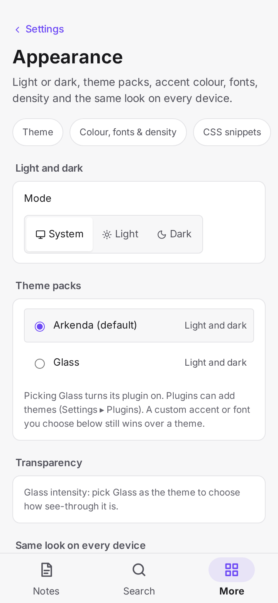 |
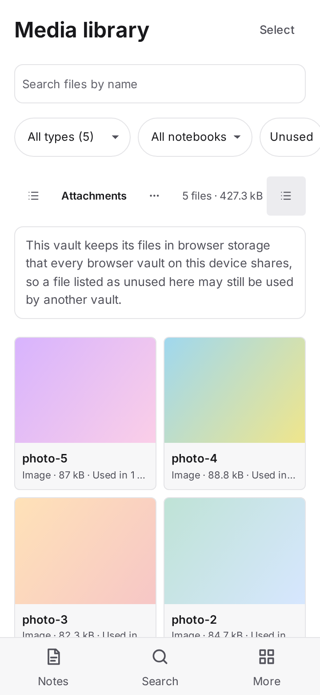 |
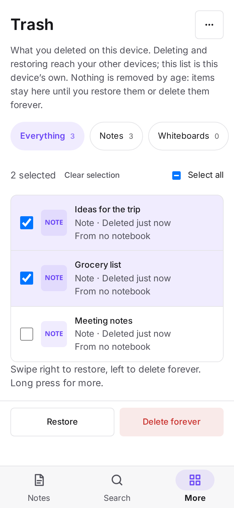 |
| Settings | Media library | Trash |
🔧 Changes
- 📱 Phone pages — Settings, the media library, the trash, More, Today, Inbox, Todos, Calendar, Dashboard, Board, Whiteboards and Vaults share one layout on phones: the same margins, the title with at most one button beside it, tabs and filters in one row you swipe sideways, and each card's title above the card. Computers and tablets look as before.
- 📱 Trash — Empty trash is in the ⋯ menu at the top; with items selected, Restore and Delete forever stay at the bottom of the screen.
- 📱 Settings — Reset this page is at the end of the page.
- 📱 Inbox opens as its own page on phones instead of the note list.
🐛 Fixes
- 🖥️ Paste on Linux — the right-click menu's Paste, and pasting a screenshot with Ctrl+V, work again in the Linux app ("The app is not allowed to read the clipboard" is gone).
- 🖥️ Videos in the Linux AppImage — adding a large video no longer freezes the AppImage or turns its window black, and YouTube cards play; the AppImage now carries the media plugins it needs on every distribution.
- 📱 Delete forever on phones — Empty trash and Delete forever no longer bring deleted files back into the media library. On a phone or in a browser, a file other vaults on the device may share stays stored, but it no longer shows in the library unless a note uses it again.
0.4.0 - 2026-11-11
A redesigned Settings, an Inbox that files your captures, a richer right-click menu with spelling suggestions, a cleaner Markdown map, Arkenda in the Microsoft Store, and phones that save battery when Arkenda is in the background.

✨ New
Inbox — one Inbox note per vault, with its own page to file what you capture: move a line to a note, turn it into a new note, or mark it done. Images, videos and files show what they are, with their name and a thumbnail. Choose the Inbox note and what filing does in Settings ▸ Notes & capture ▸ Capture.
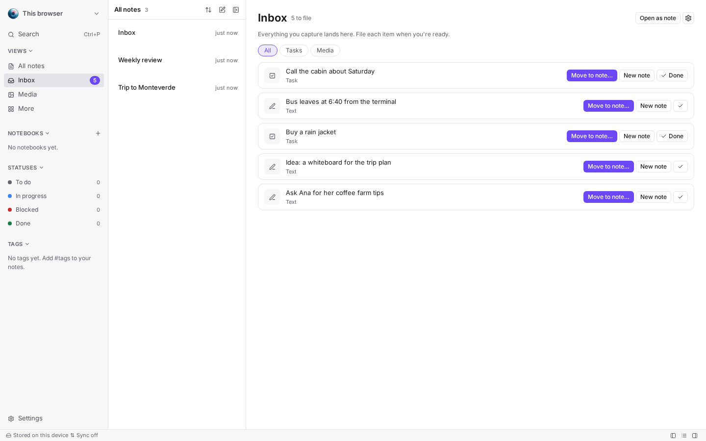
Redesigned Settings — every option grouped into nine categories, with the less common ones folded under Advanced, one search that also finds plugins and experiments, an icon rail on tablets and category screens on phones.
Plugins and Experimental as grids — filter by family or area, search, show only what is on, and open a plugin's options in a sheet.
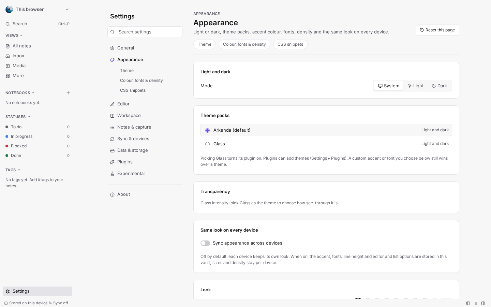
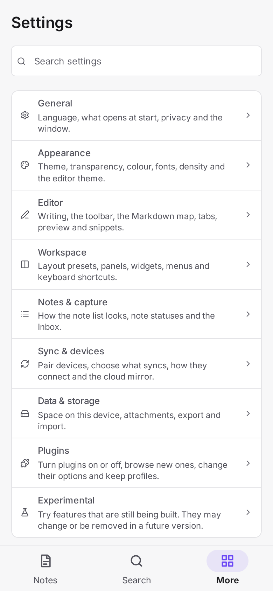
The categories and one search on the desktop One screen per category on phones 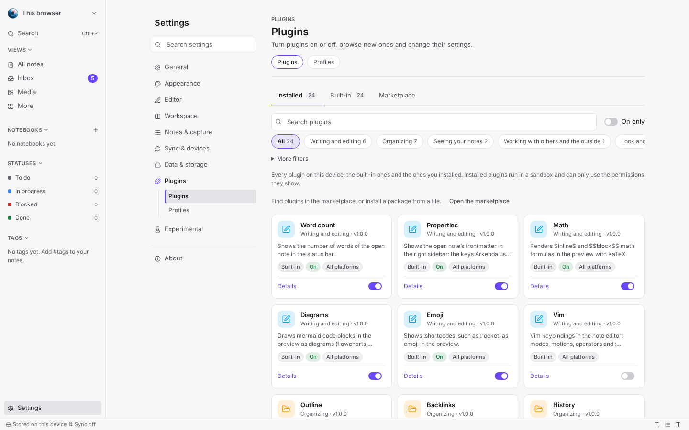
Plugins as a grid: families, search and On only Media library preview — each file previews by its kind: images whole, video and audio that play in place (audio with its waveform), a PDF's first page and page count, a text file's first lines.
🧪 Right-click menu — back and forward, reload (it saves your edits first), zoom, settings, and in the editor Check spelling; 🖥️ on Linux and Windows the misspelled word's suggestions appear at the top of the menu. On by default; turn it off in Settings ▸ Experimental.
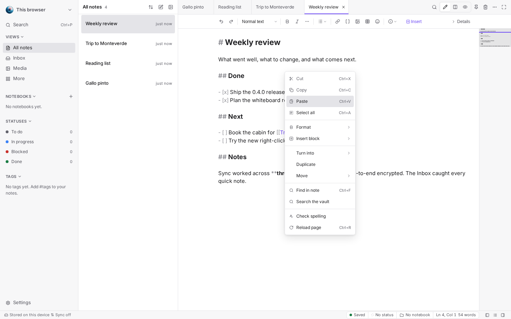
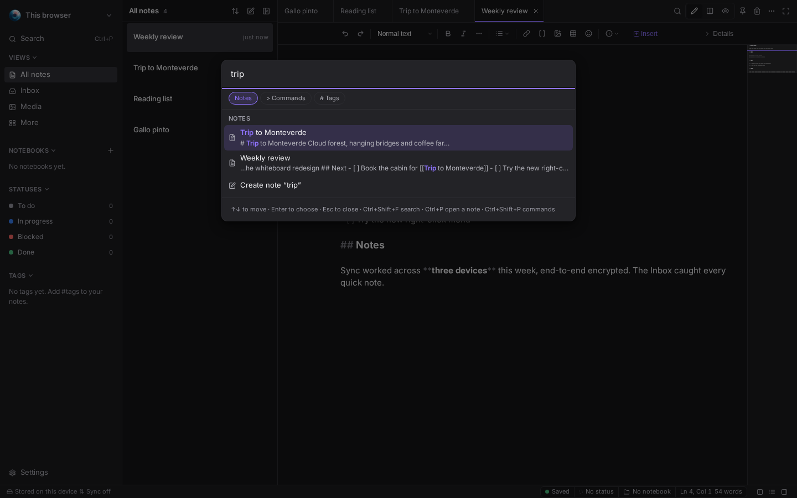
The editor's right-click menu Ctrl+P finds notes, commands and tags Ctrl+Tab order — in Settings ▸ Editor ▸ Tabs, keep the strip order (Linear) or switch to the most recent tabs (Recent): hold Ctrl and press Tab to walk back, release to land.
Keys — Alt+← / Alt+→ go back and forward, Ctrl+R (⌘R) reloads after saving.
🖥️ Microsoft Store — Arkenda can be installed from the Microsoft Store, signed by Microsoft and updated by the Store. The direct installers stay available as before.
📱 Save battery — when Arkenda goes to the background on a phone, sync pauses and catches up as soon as you return. Turn it off in Settings ▸ Sync & devices ▸ Connection ▸ Battery to keep syncing in the background.
🔧 Changes
- Markdown map — shows your note's text from far away, one stroke per word, instead of a small blurry render; the heading under the pointer shows as a tip.
- Glass theme — picking Glass turns it on in one step; choose Subtle or Strong (today's look), and find Reduce transparency and the window blur together under Transparency.
- 🖥️ Window effect — the Translucent mode was removed (a see-through window looked bad on Linux and Windows); Blur stays as it was. A device that used Translucent now opens with the effect off.
- 📱 Phone settings — phones no longer show settings that don't apply to them (toolbar, tabs, reading width, layout presets, panels and widgets).
- Inline code stands out from the text, in the editor and the preview.
- Video cards in lists — a YouTube or X link alone in a list item now shows as a card too.
- Sync messages — clearer reasons when a device can't be reached, and which backups each device has.
- 🖥️ Windows installers show Arkenda's icon and branding.
🐛 Fixes
- 🖥️ YouTube cards on desktop — videos play instead of showing "Error 153".
- Pasting screenshots — images copied from a screenshot tool paste into the editor.
- Pinned notes — pinning from the editor always shows in the note list (folder vaults).
- 🖥️ Title bar — the app no longer slides up behind Arkenda's title bar.
- 🖥️ Middle-click on a tab (Linux) — closes the tab without pasting into the note.
- Reduce transparency shows only where it applies.
- 📱 Phone screens — the image viewer and annotator clear the status bar, and links open in your browser.
- Search after a hiccup — if search's background helper restarts and your notes can't be read right away, search keeps retrying in the background and catches up without waiting for you to edit a note.
⚡ Performance
- Less memory in large vaults — each note's searchable text is kept once instead of twice (about 20% less memory with 10,000 notes), and the editor remembers the cursor and scroll position of up to 200 notes per pane.
- 🖥️ Faster desktop start — less code loads before the window appears.
📝 Documentation
- A privacy policy and issue forms for bugs, features, questions and other feedback.
- The README shows the 0.4.0 screens and features: the Inbox, tabs, the Glass theme, the new Settings paths and in-app updates.
0.3.1 - 2026-11-09
Syncing media to the Linux desktop app works again, and large notes and files sync reliably on every device.
🐛 Fixes
- 🖥️ Linux app froze and went blank while syncing media — the Linux desktop app no longer stops responding, goes blank and needs a force quit when photos, videos or other large files sync from a phone or another device. Sync now sends them in pieces small enough for the Linux app to sign safely.
- Large notes in the S3 mirror — very large notes and big changes are now split into smaller pieces when they go to the S3 mirror, so they upload from every device, the Linux app included.
- Plugin signatures — the plugin catalog and plugin releases with large signed files are verified correctly on the Linux app.
- 🖥️ Slow sync after a connection hiccup — if the desktop app's connection between its window and the system drops to its slow fallback, the app now notices and offers to restart, which brings full speed back.
⚡ Performance
- Receiving media — each piece of a received photo, video or file is checked once instead of twice, so large files arrive faster and use less memory.
0.3.0 - 2026-11-09
Note properties you can see and edit, a note list that fits any width, a richer History, Linux that matches Windows (native blur, the system accent, the desktop's window buttons), more ways to make the app yours, X and YouTube cards, a much fuller MCP for AI agents, and in-app updates on Android.
✨ New
- Note properties — the Properties panel shows a note's properties and lets you add, edit, rename and remove them (text, number, date, checkbox, list, tags). A folder vault keeps them in the note's frontmatter, changed without touching anything else in the file; a browser vault keeps each property apart, so edits made on two devices at once both survive.
- A note list that fits — no more sideways scrolling: long titles, tags and notebooks fit any width, the time sits on the title line, a coloured edge shows the status, two tags show with "+N", the notebook path shows in mixed views, pinned notes get their own Pinned section, and the desktop shows quick actions on hover.
- Status bar note strip — the status bar shows the open note's save and sync state, status, notebook, backlinks, the caret position and word count, each one clickable.
- History — versions are grouped by day with how much each one changed; compare in the panel, at full width or in a tab of its own (Open in a tab); restore only the lines you pick; Undo after any restore; name a version ("Before the rewrite") and filter by source or by name. The text a restore replaces is always kept as a version first.
- 🖥️ Native blur on Linux — with Window effect ▸ Blur, KDE Plasma (Wayland and X11) blurs what is behind the window; desktops that blur by their own rules, or offer apps no blur (GNOME), say so instead.
- System accent colour — Appearance ▸ Accent ▸ System follows the accent colour of Windows, of your Linux desktop, or of the browser where it offers one, and changes with it. On Linux the system's light or dark choice is also read from the desktop.
- 🖥️ Window buttons where your desktop puts them — with Arkenda's own title bar on Linux, the minimize, maximize and close buttons follow your desktop's layout (left or right, and which ones).
- Notebook colours and icons — give a notebook a colour and an emoji from its menu (Colour and icon…);
they show in the sidebar, the note list, the status bar and the tabs. A folder vault keeps them in
.arkenda/notebooks.json, so they travel with the vault. - 🖥️ Interface zoom — make the whole window larger or smaller (80–150 %) in Settings ▸ Appearance or with Ctrl/Cmd + and −, Ctrl/Cmd 0 to reset; kept per device. Also the fix for Linux scaling that draws the app too small or too large.
- Focus writing — in zen mode, keep the line you type in the middle of the editor and dim the other paragraphs (two switches in Settings ▸ Editor).
- CSS snippets — your own small style sheets in Settings ▸ Appearance ▸ CSS snippets, kept on this device, each turned on or off. If the app fails to start with snippets on, the next start runs without them and tells you which; Ctrl/Cmd+Alt+Shift+S turns them all off for the rest of a run. Stable hooks: docs/css-snippets.md.
- Glass theme — a built-in theme pack, light and dark: see-through side panels and bars over an aurora in your accent colour (or your desktop, with the window effect's blur), text kept readable.
- Reduce transparency — a switch in Settings ▸ Appearance makes Glass, the window effect and frosted menus solid on this device; on Android, battery saver does the same for Glass.
- 🧪 X and YouTube cards — a YouTube video or a post on X linked alone on its line shows as a card in the
preview; nothing from YouTube or X loads until you click it, then it plays in a sandboxed frame from
youtube-nocookie.comor X's embed page. The desktop and Android apps show the thumbnail, title and author; on the web, YouTube cards do so only after you turn on Show previews on the web. The note keeps the plain link. - 📱 Update from About on Android — Settings ▸ About downloads a new version, checks its signature and that it is signed like the installed app, and opens Android's installer (allow Install unknown apps for Arkenda once). Versions before 0.3.0 still link to the release page: the first in-app update is the one after 0.3.0.
- MCP for AI agents — the local MCP server can now append to a note, insert under a heading and replace text; set properties, tags, the pin and the status; add, check and date tasks; list notebooks, tags and the trash; move and restore notes; list notes and images as resources (with change notices); and offers prompts (summarize a note, a daily review, related notes). Every write still asks you first. Agents set up for 0.2.x keep working.
🔧 Changes
- Linux downloads — the
.deband.rpmare now the recommended Linux downloads: about as small as the Windows installer (the.AppImagecarries its own WebKitGTK and is several times larger). All three update themselves.
🐛 Fixes
- Note properties showed nothing — properties are now read and shown for every note, and what you add is kept.
- MCP server — the launcher's arguments, the token file's permissions, idle HTTP sessions (closed after 90 s) and an empty search are handled; a regenerated token reaches the running server.
0.2.0 - 2026-11-07
In-app updates on the desktop, PDF export on Android, .mkv videos, a faster start for large vaults, internal
links that open, menus that look alike everywhere, and an experimental browser window. It includes the betas
0.2.0-beta.0 (2026-11-06) and 0.2.0-beta.1.
✨ New
- 🖥️ Update from About — Settings ▸ About downloads a new version, checks its signature and installs it with Restart now, once every window has saved its edits, on Windows and Linux. Versions from 0.1.x still show the new version with a link to the release page: the first in-app update is the one after 0.2.0 is installed.
- 📱 Export a note to PDF on Android — Export ▸ PDF opens Android's print dialog, where you can save the note as a PDF or send it to a printer.
.mkvvideos — Matroska videos are stored and play as videos instead of becoming a.binfile. A video the app cannot play says it can't be streamed here and, in a desktop folder vault, offers Open in system player. Devices still on 0.1.x show an.mkvas a plain file until they update.- Split view on smaller windows — side-by-side editing and preview is offered from 720 px of editor width (was 960 px), so it fits half a laptop screen.
- Note list right away — in a browser vault (the web app and Android), the note list from your last visit is shown, read-only, while the vault opens, then switches to the live list.
- 🧪 🖥️ Browser window — turn it on in Settings ▸ Experimental and choose Open web links in ▸ Browser window: web links open in one Arkenda window with a Page menu (Back, Forward, Reload, Open in system browser, Close) instead of your browser. It follows the app's light or dark theme, and a link that opens a pop-up (a sign-in, a payment) gets a window of its own. Its pages can't reach your notes and keep their cookies apart. Ctrl+click or a middle click still uses your system browser. Desktop only, off by default.
- Toolbar settings that match the toolbar — Settings ▸ Editor ▸ Toolbar previews the toolbar as the editor draws it (Normal text ▾, More, Lists ▾, Callout ▾, + Insert) and has one card per part of it: choose what each dropdown lists, show or hide each button, and reorder the buttons that can move. Any tool can be turned off, including those hidden by default (headings 4–6, highlight, note link, Callout ▾).
🐛 Fixes
- 🖥️ Links that did nothing on the desktop — web and mail links (Settings ▸ About, a note's links, a plugin's page) now open in the system's browser or mail app.
- Internal links — Ctrl+click (Cmd+click on macOS) on a
[[link]]in the editor opens its note, and a heading's copied link (/notes/…#heading) opens that note and heading from the preview instead of doing nothing. - Menus that looked different — the toolbar's callout menu shows each kind's colour and its
[!NOTE]syntax as the[!menu does, the table row and column menus in the preview are the app's own menu, the editor's table bar looks like the selection bar in every editor theme, and every menu marks the highlighted item the same way. - Tables in the preview — a column's alignment (
:---:,---:) shows again, a caption lines up with the cells inside the table's frame, and the add-column + has room of its own beside the table instead of sitting under the scrollbar or over the last column (a narrow split pane above all). - Toolbar settings that did nothing — the toolbar page still listed tools the toolbar no longer shows (divider, table of contents, camera and recorders) and offered to reorder headings and lists, which the toolbar ignored. Those tools are in + Insert; the page now lists only what the toolbar shows.
- Uploads that never finished — adding a video or a large file to a browser vault could hang until the app was restarted, blocking every other upload (seen on Windows). Each step now has a time limit: the upload either lands or says it could not be stored, and the next upload works.
- The note list failing to load now says so, with Try again, instead of staying empty.
- 📱 Check for updates on Android points to the release page instead of saying nothing is configured.
- A New notebook click while the sidebar was still drawing could be ignored; it now opens the name field.
- Sync — a vault key sent by a device right as the connection closed is still applied, and logged when it cannot be.
⚡ Performance
- Large vaults open faster — big saved snapshots of a browser vault are split into smaller pieces, read without freezing the page, and the app starts reading the vault while the cached note list is shown.
- Less work for random ids — ids for sync and the editor come from a pooled random buffer.
- The todo page reads note details without sorting them first.
🔧 Maintenance
- 🖥️ Desktop installers are signed for the in-app updater, and each release's
latest.jsonlists them; it keeps the fields 0.1.x versions read. - Betas: a version like
0.2.0-beta.0is published as a GitHub pre-release with its own update feed. - Biome 2.6 now formats and lints the stylesheets and the Markdown files.
- New automated tests for the cached note list, split snapshots, uploads that stop answering and the update feed.
0.1.1 - 2026-11-06
A maintenance release: a much faster app on phones, security hardening, fixes for the editor, phones and the desktop builds, and a steadier release pipeline.
🐛 Fixes
- Editor suggestions — clicking an option in a suggestions menu (
/,[[,[!, emoji) always applies it; a click right after the list opened or changed was sometimes ignored. - 📱 The + button is on screen as soon as the app starts, before the vault finishes opening. A tap while it opens makes exactly one note once it is ready, however many times you tap.
- 🖥️ Windows builds — code that only applies to Linux (the Wayland activity island, the screen-capture picker, the terminal's tty) is limited to it, so the desktop app builds cleanly for Windows.
- Sync after a device is removed — a device that was offline when another device was removed now always receives the new vault key on its first connection back; before, it could miss it on a slow device and had to connect again.
- 🖥️ Voice memos — when the microphone is refused or missing, quick capture always says why; starting a voice memo from the command palette could lose that message.
- Release downloads — installers are published as plain files next to their
SHA256SUMS.txt, never inside folders, and two files with the same name stop the release instead of overwriting each other.
⚡ Performance
- 📱 No more waiting on every tap — Android redrew the app's large logo icon each time you changed view, went back or opened a note, freezing the app for up to a few seconds each time. The app no longer declares that icon: switching views, going back and opening notes are now near-instant.
- Sidebar and editor ready sooner — notebooks, tags, statuses, plugin panels, icons and the editor's snippets, table editing and selection bar appear right after the first screen is drawn instead of waiting for the device to go idle (up to 2 seconds on a busy phone).
- Board and todos open faster — board lanes show their first 20 cards and todo groups their first 30 tasks, and more appear as you scroll; counts still show every item, and keyboard navigation, drag and drop and Show more work as before.
- Large vaults stay responsive — note lists, the notebook tree and status counts reuse what is already read instead of re-reading every note after each change, and the task list is sorted once instead of on every query.
- 📱 Smoother scrolling — touch gestures no longer make the page wait before it scrolls.
- 📱 Big photos use far less memory — photos are decoded only as large as the copies the app makes (at most 2560 px), so a 50-megapixel photo no longer risks running a phone out of memory.
- 📱 Less work in the background — the media library shows thumbnails lazily and in batches, a folder vault is re-checked at most every 30 seconds when you come back to the app, the sync status stops updating while the app is hidden, and the network type is read only while sync or the cloud mirror runs.
🔐 Security
- 📱 Android backups — Google cloud backups of your notes now happen only when Android encrypts them with your screen lock (Android 9 and later); your sync keys were already excluded.
- 🖥️ Folder vaults — nothing in the app can write into a vault's
.gitfolder, so a git hook cannot be planted there. - 🧪 Local MCP server — its HTTP endpoint refuses every request that comes from a web page, sandboxed ones included; desktop MCP clients are unaffected.
- Printing a note runs in a sandboxed frame that cannot run scripts.
🔧 Maintenance
- The app version is set in one place:
bun run version:set <x.y.z>(package.jsonis the source). - Angular 22.2.4 (its build tools 22.2.6), Tauri CLI 2.12.4 and other patch updates.
- Build and test tools updated (Biome 2.6, Playwright 1.65, Vitest 5.1), clearing every known advisory
(
bun auditreports none). - New automated tests for the board, the todo list, the note cache, photo processing and the Android network readings.
- A failed Android build no longer blocks the desktop release; the APK is skipped with a warning.
- CI moved to the latest GitHub Actions, fixed the Android NDK install, and runs tests in fewer places to keep pipelines fast.
- Clearer READMEs.
0.1.0 - 2026-11-04
The first release of Arkenda — a local-first, private Markdown notes app.
No account, no telemetry: your notes stay on your device as plain Markdown, and nothing reaches the network
unless you turn on something that needs it.
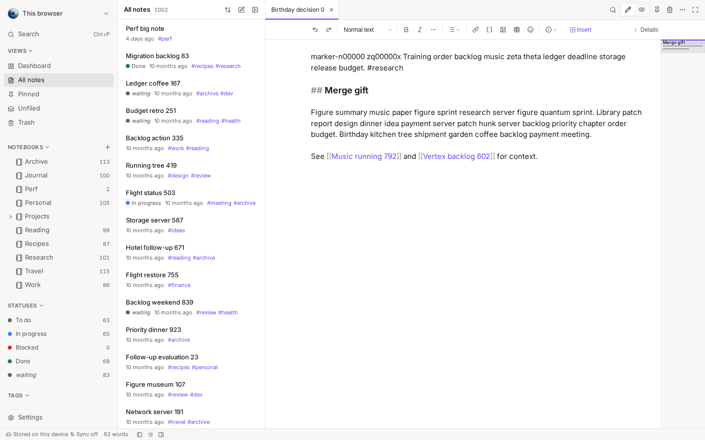
✨ Highlights
| 📝 Markdown-first | Notes are portable Markdown with frontmatter, never locked in a database. |
| 📂 Your folder | On desktop a vault is a plain folder of .md files; edits made outside are picked up live. |
| 🔒 Private sync | Device-to-device sync, end-to-end encrypted. Relays only ever see encrypted traffic. |
| 🧩 Plugins | Sandboxed plugins with declared permissions: commands, panels, widgets, themes. |
| 💻📱 Everywhere | One app for the browser, the desktop (Linux, Windows) and phones and tablets. |
🚀 Features
✍️ Notes and editor
- A Markdown editor with a toolbar — headings, lists, links, tables, images and emoji; switch between edit and preview, with a minimap, find in note and "Turn into".
- One insert menu everywhere: type
/, use the block+handle or the toolbar's Insert. - Linked notes —
[[suggests notes to link,[[Note#Heading]]jumps straight to a heading, and backlinks show who links here.[!suggests callouts, shown as coloured alerts. - Properties — tags, status, pinned and the rest live in the note's frontmatter, explained in the Details panel.
- Export a note to share it outside Arkenda.
- Live presence — see who else is in a note, with their cursors, when a vault is shared between devices.
- 🧪 Richer Markdown blocks: tabs, timelines, spoilers, typographic quotes, Mermaid export, maps (
md-map), and link titles fetched when a link is pasted. - 🧪 Editor themes: a gallery of light and dark pairs.
🗂️ Organise and find
- Nested notebooks, tags and statuses — set a status from any note, with counts in the sidebar.
- Views — Dashboard, All notes, Pinned, Unfiled and Trash, with a choice of note-list density.
- Command palette — one search for notes,
>commands and#tags. - Outline of the open note.
- 🧩 Vault map — your notes and their links as a 2D or 3D graph.
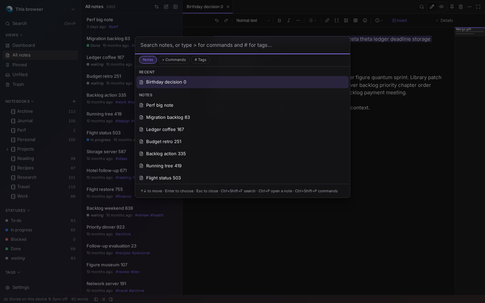 |
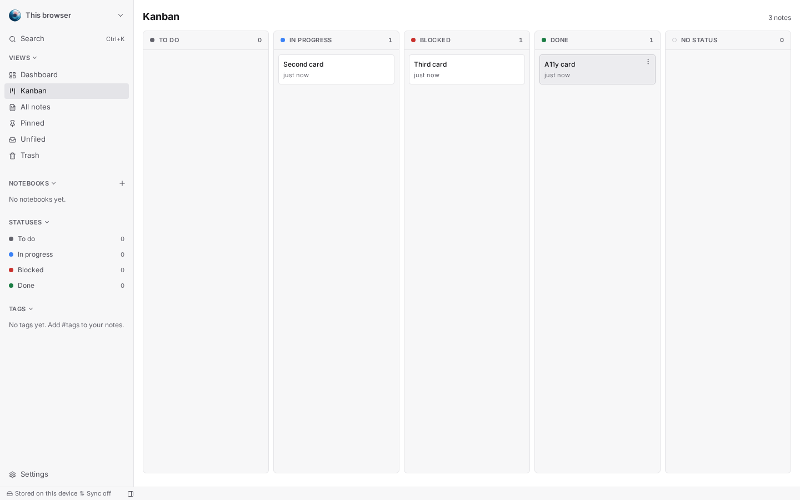 |
| The command palette (dark theme) | Kanban: notes in their status lanes |
📅 Plan your day
- 🧪 Today — overdue and upcoming tasks in one place, with quick add.
- 🧪 Todos and calendar — every task across your notes, by date.
- 🧪 Kanban — notes grouped by status, with an Unassigned lane; move cards by dragging, with
Alt+arrowor from a menu. - 🧪 Whiteboards — shapes, text, sticky notes, connectors, images and live note cards; drop files from your file manager onto the board. Each board is saved as a note.
- 🧩 Dashboard widgets — pomodoro, insights, weather and clock.
🖼️ Media and attachments
- Audio and video play right in the note; any other file shows as a card with Open and Save.
- Pictures — annotate and redact, compression levels, and location data (EXIF) removed on import.
- PDF reader — read PDFs in the app and link to a highlighted passage.
- Media library — filter by type, sort into folders with labels, and delete safely (a trash per device, by kind).
- Attachment folders — give a notebook a media folder: new uploads go there, and moving a note offers to move its media too.
- 📱 Capture photos, audio and video from the phone or tablet.
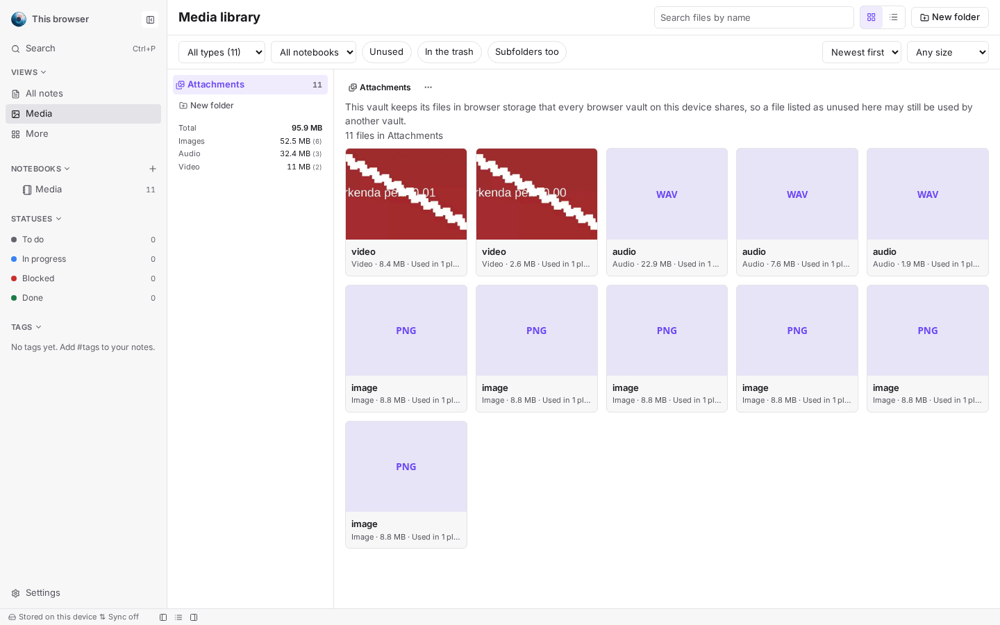
💾 Vaults and storage
- Browser vault — stored in the browser (IndexedDB) and exported to a portable archive whenever you want.
- 🖥️ Folder vaults — a vault is a folder: folder = notebook, file name = title. See the folder vault guide.
- Several vaults — a vault picker and Manage vaults; a vault that is not reachable is shown as such, never lost.
- Backups — import and export run in the background, and imports are checked before anything is written.
- Cloud mirror (S3) — a copy in your own bucket, encrypted with a recovery code when you choose, and the option to keep large media only there.
🔄 Sync and devices
- End-to-end encrypted sync between your paired devices — see the sync guide.
- Pair with a code, step by step; paired devices find each other again on the local network.
- Every way to connect, in order — the local network, across networks (desktop and Android), public relays, and store-and-forward through your own S3 mirror.
- Sync & devices — the status at a glance, each device's health, a connection test and what syncs where.
- Large media waits for Wi-Fi, with a switch per device.
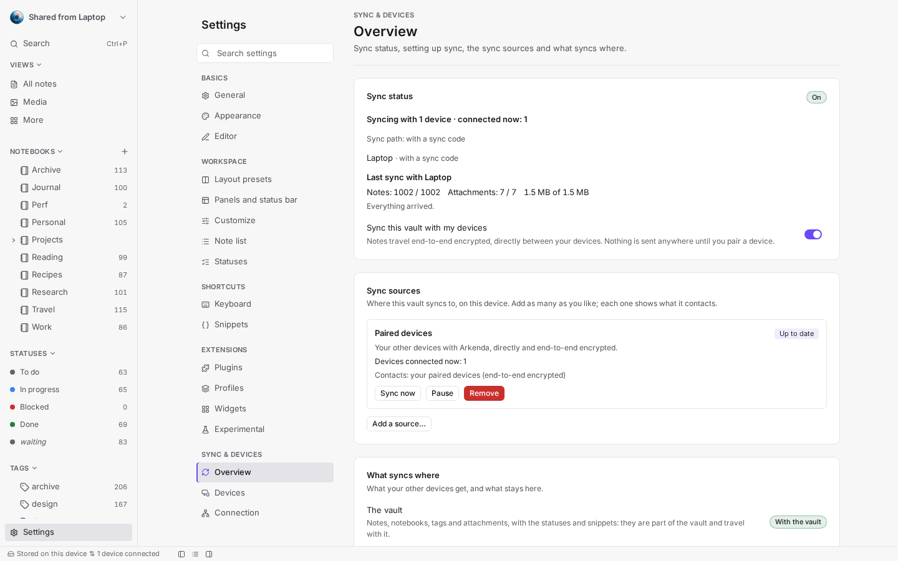 |
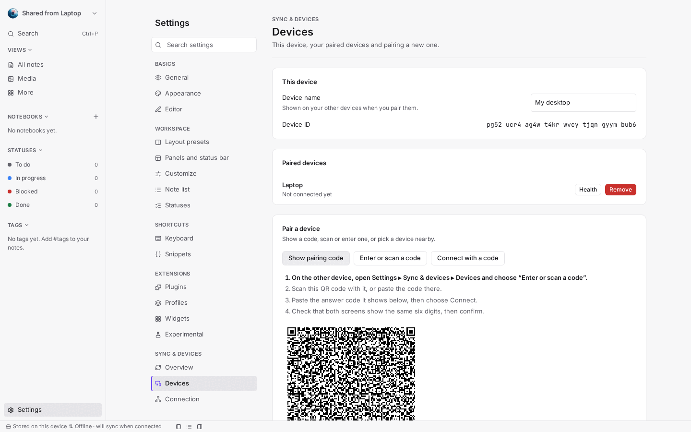 |
| Sync & devices at a glance | Pairing a new device with a code |
🧩 Plugins
- Sandboxed plugins with declared permissions: they add commands, insert items, panels, widgets, settings, themes and Markdown blocks — and never reach the app's pages, cookies, storage or secrets.
- Built-in plugins (🧩 all off by default): pomodoro, insights, vault map, git history, weather and clock.
- Write your own — plugin documentation, from getting started to permissions and testing.
🖥️ Desktop app
- A flexible layout — collapsible panes with an icon rail, a toolbar row, a selection bar, and notes side by side in horizontal and vertical splits. See the desktop layout guide.
- The activity island — quick capture with a global key, screenshots, voice memos and a drop shelf. See the island guide.
- 🧩 Version history with git — the vault's history through your system's git.
- Secrets in the OS keychain.
- Check for updates in Settings ▸ About, which asks the release page only when you click.
- 🧪 Glass window effect (Linux notes), a system-wide notch, screen recording, an integrated terminal and a local MCP server.
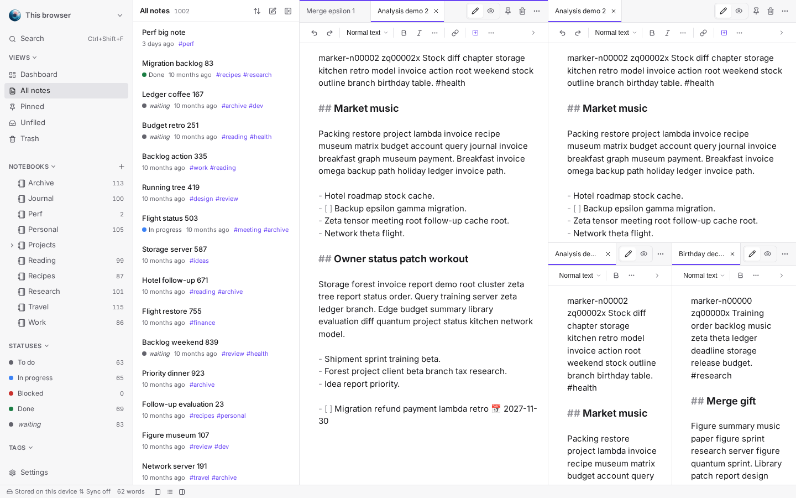
📱 Phone and tablet
- Made for touch — a bottom bar (Notes, Today, Search, More), a + button, long-press sheets, row swipes, pull to sync and the system back gesture.
- Writing on a phone — a single compact header, the formatting bar above the keyboard, and details as sheets; new notes open ready to type.
- Tablets — drawers in portrait, two panes with a rail in landscape. See the phone and tablet guide.
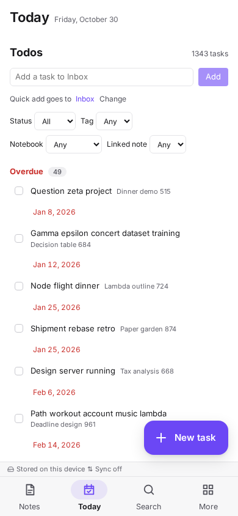 |
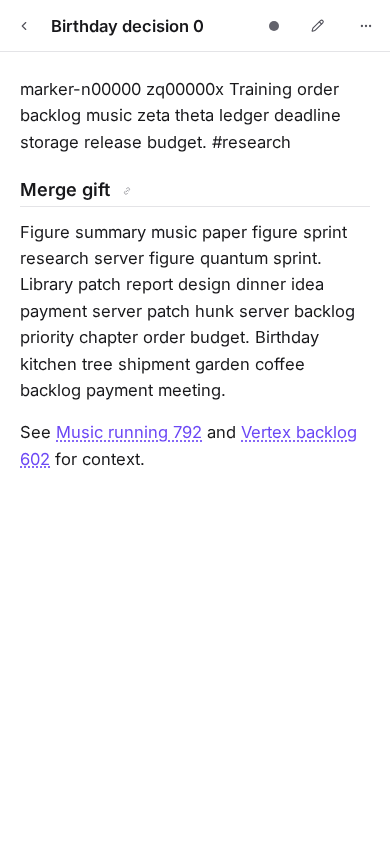 |
| Today, with the bottom bar | Reading a note |
🎨 Settings, themes and languages
- A new Settings — two columns on desktop, stacked pages on touch, with dedicated Sync & devices and Data & storage pages and a tidy Experimental page.
- Themes and accents — presets such as Nord, Sepia and High contrast, and accent colours.
- Your shortcuts — customise keyboard shortcuts and snippets. See keyboard shortcuts.
- English and Spanish (en-US, es-CR).
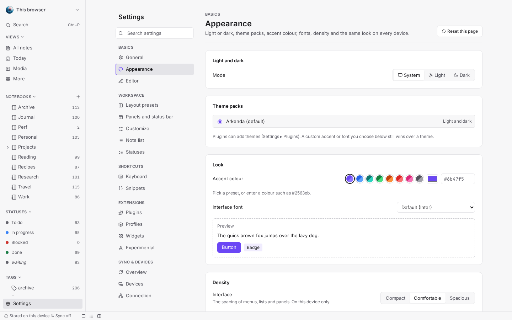 |
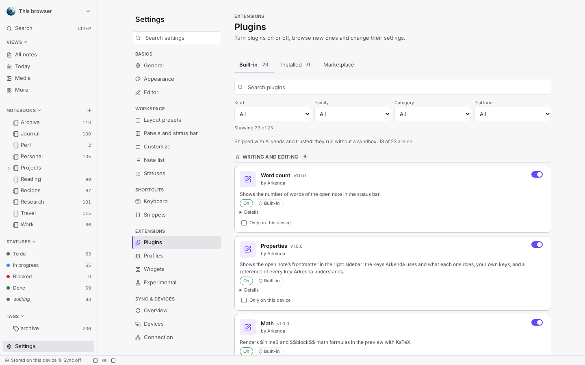 |
| Appearance | Plugins |
🔐 Security
- Private by default — no account and no telemetry; a strict Content Security Policy names every host the app may contact, and it is checked on every build.
- Encrypted sync — relays only pass on encrypted traffic they cannot read; a cloud mirror is encrypted too when you turn on its Encrypted switch (with a recovery code).
- Every input is checked — imports, sync messages and plugin calls are validated before they touch your data.
- Plugins in a sandbox, limited to the permissions you grant.
⚡ Performance
- Fast start — the startup bundle is kept under a hard budget on every build (web, desktop and mobile); features you have not opened load only when you need them.
- Large vaults — measured with 10,000-note vaults; the todo list opens about twice as fast as in earlier builds.
📝 Documentation
- Guides for folder vaults, sync, media, keyboard shortcuts, the desktop layout, phones and tablets, the activity island and plugins.
✅ Compatibility
| Platform | Status in 0.1.0 |
|---|---|
| 🌐 Web | ✅ Modern browsers; the vault lives in the browser's storage |
| 🐧 Linux | ✅ .deb, .rpm and .AppImage |
| 🪟 Windows | 🟡 .msi and setup .exe, built automatically; not yet tried on a Windows machine |
| 🤖 Android | ✅ .apk for arm64 (Android 7 or later), installed from the release page |
| 🍎 macOS and iOS | ⏸️ On hold |
Known limitations
- The installers are not code-signed yet: Windows SmartScreen may warn the first time you open the app.
- No automatic updates yet — Check for updates tells you when a new version is out and links to it.
- Printing a note on macOS and on Android is not available yet.
- Features marked 🧪 are experiments: they may change, and they stay off until you turn them on.